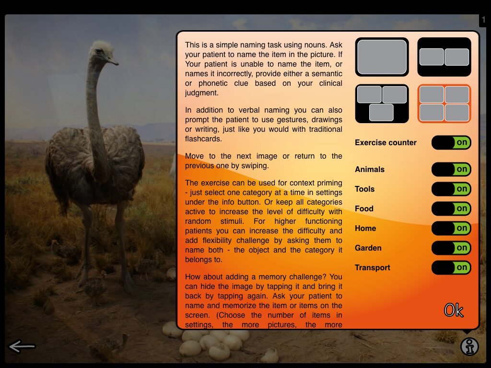
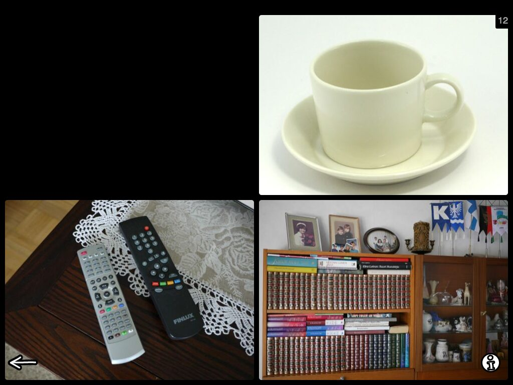
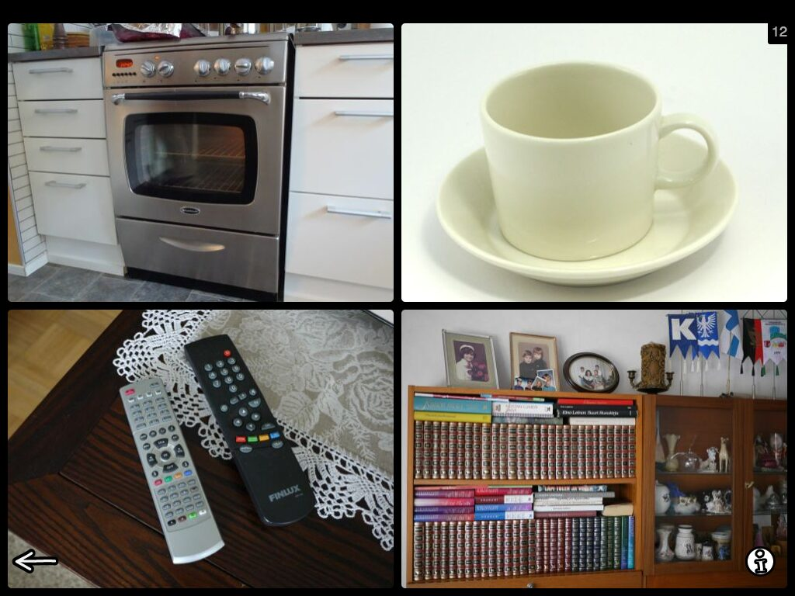
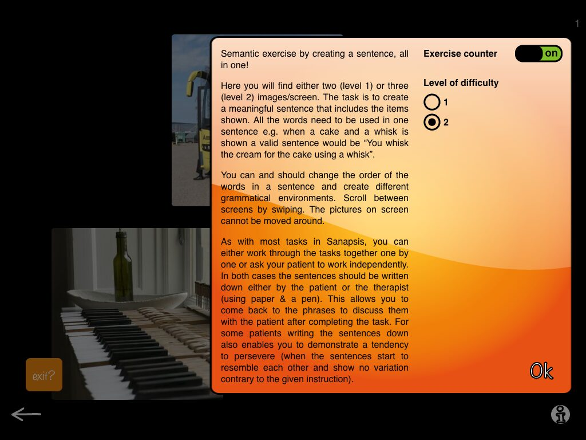
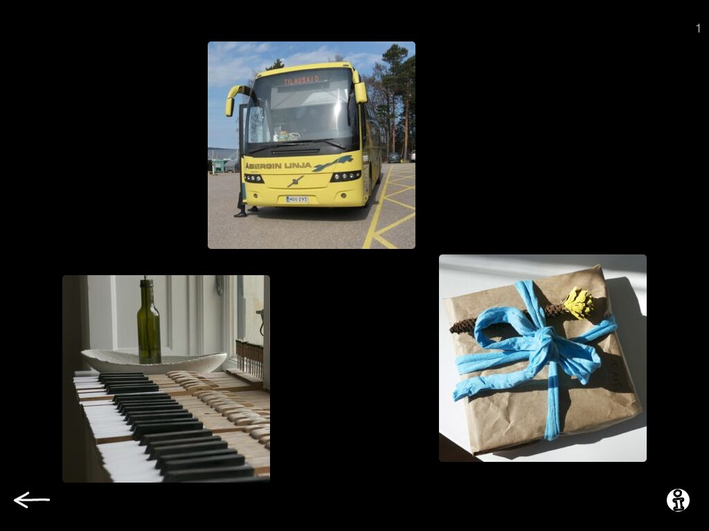
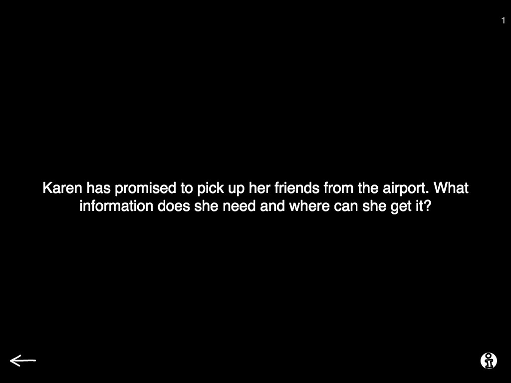
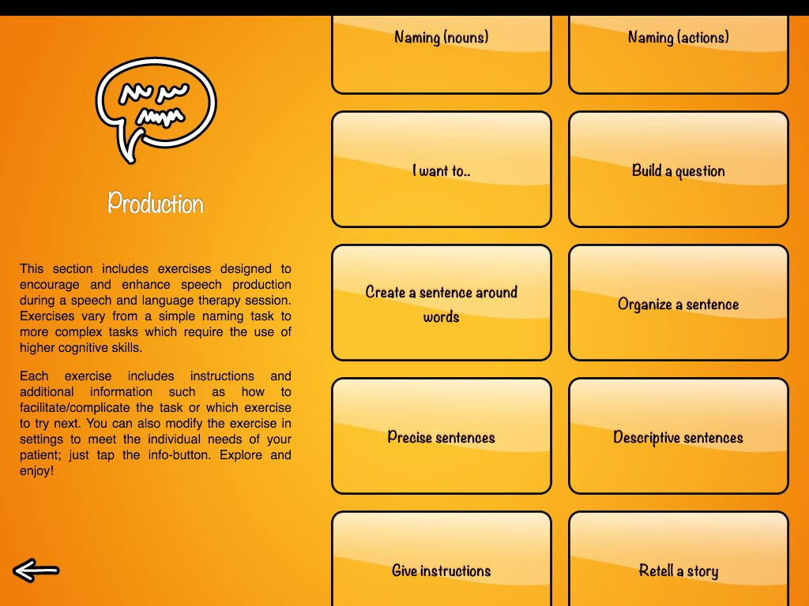

First things first - Naming nouns and Naming actions.

This is the basic flashcards-type naming task. In settings you choose a category, on screen you see a photo from that category (one of 369 photos in naming nouns or one of 197 photos in naming actions). You swipe to see the next photo. It is simple, versatile and useful in many ways.

But as you know, in the settings of this task you can choose how many images are shown on screen (1-4). When you have photo(s) on screen and you tap the one, it disappears. When you tap it again, it comes back. Why? Why does it disappear as the patient accidentally taps the pic? Annoying!! Must be fixed! Or..hmm..maybe surprisingly clever?

I like to think it is surprisingly clever (as I designed it, hah). You can use this feature for delayed naming/repetition by asking your patient to name or repeat an item, hiding it and asking them to tell you what is hiding in that black screen. Use two or more to add memory challenge to the task.
I sometimes get my patients to go the extra mile by asking them 1) to memorise the items on screen 2) to close their eyes (as I hide one of four images on screen) and 3) to tell me which one is missing. Instant fun! Using this in group settings or taking turns with your patient works well too. But be aware - if you are not paying attention, it can be more hard than you think to recall the missing item, especially after many repetitions.
Next up: Create a sentence around words
Hope you remember this task has 2 levels… Level 1 provides two pictures with a connection, e.g yarn and a stuffed animal. This could lead your patient to make a sentence like: “I need yarn to fix my daughters stuffed animal”. Again a versatile task, often something to use after doing the same thing with physical objects from your patients home or your office (I like to warm my milk in the microwave before adding it to my coffee or The secretary needs keys to open the door).

However, it is level 2 that makes things interesting. This level provides 3 images on screen. The instruction is to create a sentence around these three words. As you swipe through the tasks you learn that this task is quite challenging and needs a lot of deductive brainpower! For some of my patients I like to broaden the instruction and say “Create a little story (2-5 sentences) around these items”. This could result in “I took the bus to visit my sister on her birthday. When I got there I played Happy Birthday on her piano and gave her a CD of me playing the piano as a present.”

If this is too easy, I ask them to create a DIFFERENT story around the same items. Now that requires flexibility, something most of our patients need a little work on. The next story could be something like: “As a bus driver I was once asked to deliver a present to someone in a small town. I agreed, but regretted after I learned the present was a piano!”
Give instructions

This one I already talked about in my previous post, scroll down to read more about the hidden treasure.
Ok, that was a brief reminder on what to expect when exploring Production category in Sanapsis. We always love to hear what our users come up with too, so please share your ideas with us! After all, the power of Sanapsis is that as the user you are free to be as creative as you can be, just with a little help from us.
